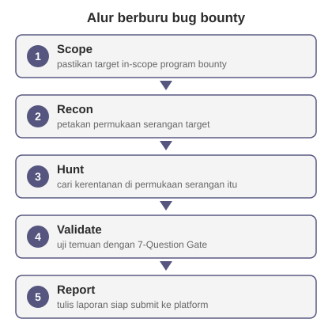

Cara Berburu Bug Bounty dengan Agentic-Bug-Hunter (Gratis, AI Lokal)
Home > Tutorial > Cara Berburu Bug Bounty dengan Agentic-Bug-Hunter (Gratis, AI Lokal)
Arsip
- Instal Apache, MySQL, PHP dan phpMyAdmin di Archlinux 2021
- Konfigurasi Virtual Host Apache Server Di ArchLinux 12 Jun 2021
- Cara Deploy Blog Statis ke GitHub Pages 17 Nov 2026
- Cara Daftar make.fun dengan Agent dan Biar Agent Cari Bounty Sendiri 17 Nov 2026
- Cara Berburu Bug Bounty dengan Agentic-Bug-Hunter (Gratis, AI Lokal) 18 Nov 2026
Agentic-Bug-Hunter adalah toolkit open-source untuk bug bounty: dari recon sampai laporan, semuanya dibantu AI dan bisa dijalankan dari terminal. Yang bikin menarik: tool ini bisa jalan sepenuhnya gratis dengan model AI lokal lewat Ollama — tanpa API key berbayar. Saya sudah mencoba sendiri pipeline-nya di target demo lokal, dan tutorial ini merangkum perintah-perintahnya beserta cara pakainya.

Gambar 1: Alur berburu bug bounty — dari scope sampai laporan.
Perhatian: Hanya berburu target yang in-scope program bug bounty resmi (HackerOne, Bugcrowd, Intigriti, Immunefi). Baca dulu policy programnya sebelum menyentuh aset apa pun. Jangan pernah memindai situs yang bukan milik kamu atau yang tidak punya program bug bounty.
Yang Dibutuhkan
- Python 3.11+ dan Git.
- Ollama + model AI lokal (misalnya qwen2.5:3b) — gratis, tanpa API key.
- Tool recon (subfinder, httpx, katana, nuclei) — sebagian besar ikut terpasang bersama repo.
Bagian 1: Instalasi dan Setup
Langkah 1: Clone repo dan masuk ke virtual environment-nya.
git clone https://github.com/awarexone/Agentic-Bug-Hunter
cd Agentic-Bug-Hunter
cd Agentic-Bug-Hunter
Langkah 2: Atur provider dan model. Perintah ini menyimpan pilihan kamu di config — jalankan sekali di awal. Yang saya pakai: Ollama + qwen2.5:3b (lokal, gratis).
bughunter setup --provider ollama --model qwen2.5:3b
Langkah 3: Cek status. Perintah ini menampilkan provider dan model aktif, target yang sedang dikerjakan, dan sejauh mana progresnya.
bughunter status
Tips: Kalau Ollama hilang setelah restart (binary-nya terhapus), install ulang binary-nya saja — model yang sudah di-download aman di folder model Ollama, tidak perlu download ulang.
Bagian 2: Perintah-Perintah
Perintah utama CLI-nya ada 12. Semuanya dijalankan lewat
bughunter — flag global --provider, --model, dan --no-banner bisa dipakai di semua perintah.
Perintah dasar.
providers menampilkan semua provider beserta statusnya (mana yang aktif, mana yang belum punya API key). models menampilkan model yang tersedia untuk provider aktif. chat membuka shell AI interaktif — cocok buat tanya-tanya soal target atau mendiskusikan temuan tanpa menjalankan pipeline penuh.
recon <target> — recon dan analisis permukaan serangan. Menjalankan pipeline recon lengkap lalu AI menganalisis permukaan serangannya: enumerasi subdomain, cek host yang hidup, kumpulkan URL, cari parameter, lalu scan nuclei. Hasilnya disimpan di folder
recon/<target>/.
bughunter recon target.com
hunt <target> — pipeline penuh. Perintah utama: recon, cari kerentanan, validasi, sampai laporan, dalam satu jalan. Opsi
--quick menjalankan lebih sedikit cek — lebih cepat, cocok buat first pass.
bughunter hunt target.com
bughunter hunt target.com --quick
bughunter hunt target.com --quick
validate [temuan] — 7-Question Gate. Menguji satu temuan dengan tujuh pertanyaan (apakah ada PoC, apakah dampaknya konkret, apakah triager akan menganggapnya bug beneran, apakah in-scope, dan seterusnya). Hasilnya: KEEP (layak dilaporkan) atau DROP (buang). Jalankan ini untuk tiap temuan SEBELUM menulis laporan — laporan yang tidak valid merusak rasio validitas kamu di platform.
bughunter validate "robots.txt membocorkan /admin dan /.env"
triage [temuan] — triage cepat. Alias cepat dari validate: penilaian singkat atas satu temuan, tanpa gate penuh. Dipakai saat ada banyak kandidat temuan dan kamu mau menyaring mana yang layak di-validate penuh.
report — tulis laporan siap submit. Menulis laporan bug yang siap disubmit ke platform (format HackerOne/Bugcrowd/Intigriti/Immunefi, lengkap dengan CVSS). Perintah ini tidak menerima argumen target — ia membaca folder findings yang sudah ada. Selalu baca dulu draft-nya sebelum submit; keputusan submit ada di tangan kamu, bukan tool.
bughunter report
bughunter report --findings-dir findings/target.com
bughunter report --findings-dir findings/target.com
chain [temuan] — rangkai exploit A → B → C. Mengambil satu temuan lalu merangkai rantai exploit — misalnya XSS, curi token, lalu ambil alih akun. Rantai seperti ini dampaknya jauh lebih besar daripada satu bug sendirian, dan biasanya dibayar lebih tinggi.
bughunter chain "XSS di halaman profil"
mcp — MCP server, doctor, dan katalog tool. Tiga sub-perintah:
serve menjalankan MCP server supaya AI lain bisa memakai tool-tool bug hunter; doctor memeriksa kesehatan setup MCP; tools menampilkan katalog tool yang tersedia lewat MCP.
bughunter mcp serve
bughunter mcp doctor
bughunter mcp tools
bughunter mcp doctor
bughunter mcp tools
Bagian 3: Alur Kerja Lengkap
Langkah 1: Scope. Pastikan program dan asetnya in-scope — baca policy program dulu.
Langkah 2: Recon. Petakan permukaan serangan target.
Langkah 3: Hunt. Cari kerentanan di permukaan serangan itu.
Langkah 4: Validasi tiap temuan dengan 7-Question Gate — buang yang lemah.
Langkah 5: Tulis laporan dan baca draft-nya sebelum submit.
bughunter recon target.com
bughunter hunt target.com
bughunter validate "temuan pertama"
bughunter report
bughunter hunt target.com
bughunter validate "temuan pertama"
bughunter report
Batasan yang Perlu Diketahui
- Target IP:port mentah (misalnya 127.0.0.1:8080) tidak bisa di-scan pipeline standar — recon menganggap target itu bukan host hidup sehingga scan-nya diam-diam tidak jalan. Solusinya: isi daftar URL manual lalu jalankan scanner langsung.
- CLI hanya mencakup 7 keluarga cek: upload, SQLi, XSS, SSTI, CMS, MFA, SAML. Tidak dites: SSRF, open redirect, auth bypass, /.env exposure, CORS, LFI, IDOR, JWT, GraphQL — itu ada di slash command plugin, bukan CLI.
- Model lokal lambat: qwen2.5:3b sekitar 5,7 token/detik setelah tuning — analisis 2000 token butuh sekitar 6 menit. Model ini juga kadang menghalusinasikan endpoint dari URL Wayback yang sampah — verifikasi setiap URL yang dikutip sebelum bertindak.
- Nuclei butuh TMPDIR di luar /tmp — /tmp hanya tmpfs 512 MB sedangkan template nuclei sekitar 83 MB.
- Target demo bawaan repo sudah di-hardening — scan yang benar menghasilkan nol temuan. Pakai hanya sebagai smoke test.
Referensi
- https://github.com/awarexone/Agentic-Bug-Hunter
- https://www.hackerone.com/
- https://bugcrowd.com/
- https://www.intigriti.com/
- https://immunefi.com/
Suka tutorial ini? Dukung penulis biar makin banyak tutorial gratis.
Dukung via Saweria